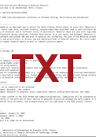
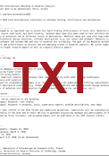
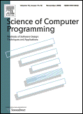

5th International Workshop on Mutation Analysis (Mutation 2010)
Download Call for Papers:
 

Important note: The submission deadline has been
extended to Friday, January 29, 2010!
Mutation is acknowledged as an important way to assess the fault-finding effectiveness of tests sets. Mutation testing has mostly been applied at the source code level, but more recently, related ideas have also been used to test artifacts described in a considerable variety of notations and at different levels of abstraction. Mutation ideas are now used in requirements validation (where distinguishing test cases can be used to challenge users about what they really want), with formal specifications (to assess resilience of specification properties to deviations), architectural design notations, and informal descriptions such as use cases. Data mutation has also been investigated for critical systems and web services. Mutation is now established as a major concept in software and systems V&V and uses of mutation are increasing.
Mutation Analysis 2010 (Mutation 2010) is the fifth in the series of international workshops focusing on mutation. It will take place in early April 2010 in Paris, France. The workshop will be held in conjunction with the 3rd International Conference on Software Testing, Verfication, and Validation (ICST'10) (6-9 April 2010).
Researchers and practitioners are invited to submit original short or full papers in any area of mutation. Topics include but are not limited to:
- Mutation-based test adequacy criteria (theory or practical application).
- Comparison of mutation with other testing techniques.
- Using mutation in empirical studies.
- Industrial experience with mutation.
- New mutation systems for programming languages (e.g. for languages not yet addressed, or offering improvements on existing ones).
- Mutation systems for higher-level descriptive notations (e.g. formal specification notations and architectural design notations).
- Increasing the efficiency of mutation (e.g. selective mutation or automated test data generation for mutation testing).
- Mutation for QoS properties (security, performance, etc.).
- Novel applications of mutation.

Authors of selected papers of the workshop will be invited to submit
extended versions to a special issue of the Science of Computer Programming journal on mutation testing.
Please check out the mutation testing community website.
|